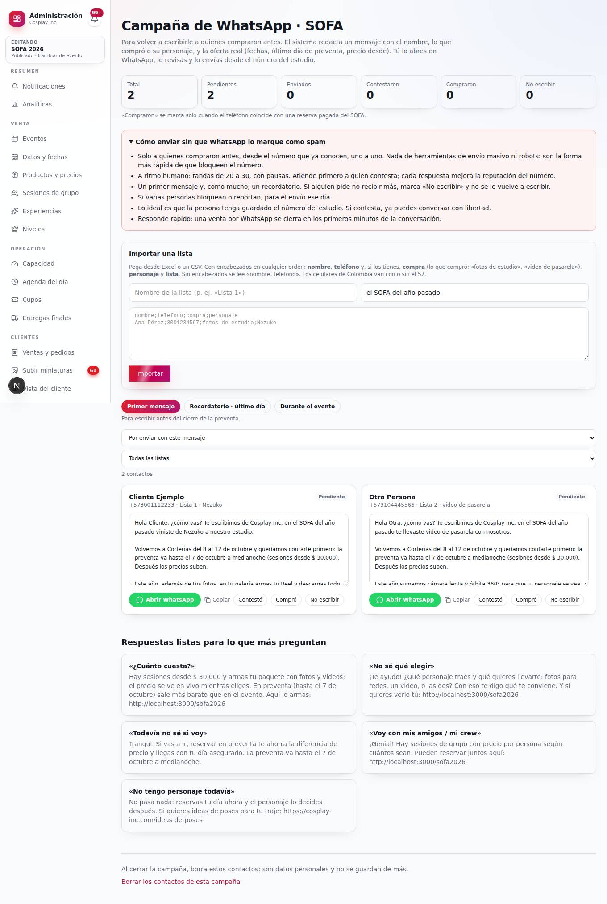
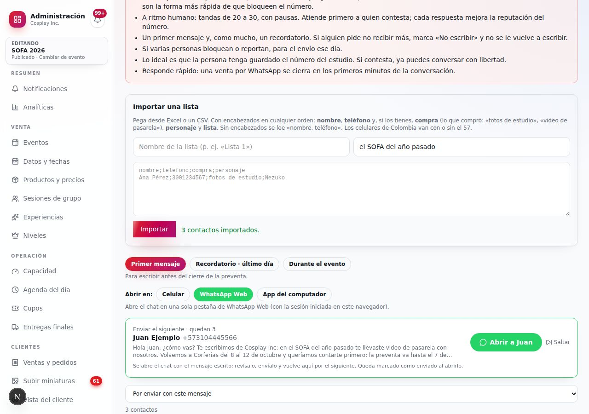

Cosplay Inc · 5 de octubre de 2026 · SOFA del 8 al 12
Campaña de WhatsApp para mover la preventa
1 · Cómo se «conecta» WhatsApp, y por qué así
Lo que ya está publicado: Administración → Clientes → Campaña WhatsApp.
- Subes las listas con «Subir archivo»: Excel (.xlsx), CSV o PDF. Si el Excel tiene varias hojas, cada hoja queda como su propia lista. También se pueden pegar las celdas en el cuadro. El archivo se lee en el navegador y no se guarda: el contenido aparece en el cuadro para revisarlo antes de darle «Importar». Un .xls viejo hay que guardarlo antes como .xlsx o CSV. Un PDF escaneado (una foto) no se puede leer.
- El sistema redacta un mensaje para cada persona con su nombre, lo que compró o el personaje que trajo, y la oferta real que lee del sistema: fechas, último día de preventa y precio desde.
- Con «Abrir WhatsApp» se abre el chat de esa persona con el mensaje ya escrito. Lo revisas, lo ajustas si quieres y lo envías desde el WhatsApp del estudio, en el celular o en WhatsApp Web.
- Queda marcado como enviado. Después marcas «Contestó», «Compró» o «No escribir». Quien compra queda marcado solo, porque el sistema cruza su teléfono con las reservas pagadas.
Por qué no un envío automático masivo:
- API oficial de Meta (WhatsApp Cloud API): el sistema ya la soporta, pero para escribir primero a alguien exige plantillas aprobadas, consentimiento previo para mensajes de marketing, costo por mensaje y pasar el número a la API. Con tres días de margen no da, y un error ahí deja el número fuera de servicio en plena preventa.
- Herramientas o robots de envío masivo «no oficiales»: no. Violan las reglas de WhatsApp y son la forma más rápida de que bloqueen el número del estudio justo antes del SOFA.
El envío asistido, uno a uno desde el número que ya conocen, es lo que no se ve como spam: mensajes personales, a gente que te compró, a ritmo humano y con respuestas reales.

Captura con contactos de ejemplo.
1a · Quién lleva la campaña
La persona que atiende el WhatsApp y vende en el punto de venta va con el rol Vendedor, no Administrador.
- Un administrador entra a Administración → Equipo, escribe su nombre, su correo y su WhatsApp, elige Vendedor y da «Crear invitación».
- Da «Enviar invitación por WhatsApp»: se abre el chat de ella con el mensaje y el enlace listos, y solo falta enviarlo. Ella abre el enlace y elige su propia contraseña: nadie más la conoce.
- Otra forma: ella misma entra a cosplay-inc.com/entrar → «¿Trabajas con nosotros y no tienes cuenta? Solicita acceso», y deja su nombre, correo, WhatsApp y contraseña. Su cuenta no sirve para nada hasta que un administrador, en Administración → Equipo → Solicitudes de acceso, elige su rol y da «Aprobar». Después aparece «Avisarle por WhatsApp» para decirle que ya puede entrar.
- Entra por cosplay-inc.com/entrar y llega al Stand: Venta individual, Venta de grupo, buscar reservas y el botón «Campaña WhatsApp».
En la campaña puede importar listas, enviar y marcar a cada contacto. No ve finanzas, precios, configuración ni el equipo, y no puede borrar la campaña: eso queda para un administrador.
1b · Enviar rápido desde el computador
- En el mismo navegador, abre WhatsApp Web e inicia sesión con el número del estudio. Otra opción es tener instalada la app de WhatsApp para computador.
- En la campaña, en «Abrir en», elige WhatsApp Web (viene así por defecto en el computador) o App del computador. La elección se recuerda.
- Arriba de la lista está la barra «Enviar el siguiente», con el nombre, el teléfono y el comienzo del mensaje. Con «Abrir a …» se abre el chat con el mensaje escrito y queda marcado como enviado.
- En WhatsApp revisas, envías con Enter y vuelves a la pestaña de la campaña: la barra ya muestra a la siguiente persona.
- «Saltar» deja a alguien para después. Cada 25 envíos, la barra sugiere una pausa para contestar a quien ya respondió.
WhatsApp Web se abre siempre en la misma pestaña: no se llena el navegador ni quedan dos WhatsApp Web abiertos. Con la app del computador, la primera vez el navegador pregunta si permite abrir WhatsApp: marca «permitir siempre».
Son unos 10 a 15 segundos por persona. Envías tú: no es un robot, y eso es lo que protege el número.

Captura con contactos de ejemplo.
1c · Contactos del teléfono y leads
También se puede subir la agenda del teléfono del estudio, como una lista aparte:
- Android: app Contactos → Exportar → archivo .vcf. Otra opción: contacts.google.com → Exportar → «CSV de Google».
- iPhone: icloud.com → Contactos → seleccionar todos → Exportar vCard (.vcf).
Antes de importar:
- Filtren la lista. Quiten a familia, proveedores y a quien nunca escribió por el estudio. Escribirle publicidad a quien no los conoce es lo que genera reportes y bloqueos del número, y con la Ley 1581 es lo más delicado.
- En «¿Quiénes son?» elijan «Nos escribieron, pero no compraron». Esas personas reciben un mensaje que retoma la conversación, sin decir que vinieron al SOFA. En la bandeja salen marcadas «lead».
- Si alguien de la agenda ya estaba en la campaña como cliente, se queda como estaba: no se duplica.
1d · Cómo leer los contadores
- Escritos: a quién se le abrió el chat desde la campaña. Se cuenta al abrirlo, aunque no se haya enviado. Si abrieron uno por probar, usen «Deshacer» en ese contacto.
- Compraron: solo quien compró después de que le escribieran.
- Ya tenían reserva: el sistema los marca solo, porque su teléfono ya tiene una reserva pagada del SOFA. No se les escribe y no cuentan como ventas de la campaña.
- Contestaron: solo cuando alguien da «Contestó». Si se marcó por error, también se deshace.
2 · Los mensajes (los redacta el sistema, con los datos de cada persona)
Primer mensaje, para alguien que vino de Nezuko:
Si compró video, la novedad de video va primero. Los nombres de los rangos salen del sistema. Si solo sabemos el nombre, abre con «Te escribimos de Cosplay Inc, el estudio de fotos de cosplay que estuvo en el SOFA del año pasado».
Recordatorio del último día (el 7, solo a quien no contestó, una sola vez):
Durante el evento (del 8 al 12, a quien no ha reservado): «ya estamos en Corferias… reserva antes de llegar y tu día queda asegurado».
El precio «desde» y las fechas salen del sistema: si cambian en el administrador, cambian en los mensajes. Todo lo que dicen es cierto.
3 · Por qué estos mensajes convencen
- Personal y de alguien conocido: el nombre, lo que compró o su personaje. Se lee como una persona del estudio, no como publicidad.
- Una razón real para hacerlo ya: la preventa termina el 7 a medianoche y el precio sube. Urgencia verdadera, no inventada.
- Algo nuevo: el Reel y el kit para redes. Para quien ya vino, es un motivo para repetir.
- Una sola pregunta fácil («¿vuelves con Nezuko o traes personaje nuevo?»). Invita a contestar, y una conversación vende más que un enlace.
- Ayuda, no presión: «te ayudo a reservar tu día».
- Respeto a quien no quiere más mensajes: si alguien lo pide, se marca «No escribir» y no se le vuelve a escribir. Atenderlo rápido baja los bloqueos y los reportes, que es lo que de verdad hace que WhatsApp marque un número.
4 · El plan de estos días
| Día | Además | |
|---|---|---|
| Hoy (5) y mañana (6) | Importar las dos listas. Primer mensaje en tandas de 20–30, con pausas. Contestar en minutos. | Historias en Instagram: «la preventa termina el 7». Pedir a quien conteste que traiga a su crew (sesiones de grupo). |
| 7 (último día) | Recordatorio, una sola vez, a quien recibió el primero y no contestó. | Cuenta regresiva en historias por la tarde y por la noche. |
| 8–12 (SOFA) | Mensaje «durante el evento» a quien no ha comprado. | QR en el stand. Responder rápido a quien escriba. |
| Después | — | Borrar los contactos de la campaña desde el admin (datos personales). Revisar cuántos compraron. |
5 · Reglas para que el número no se marque como spam
- Solo a quienes compraron antes, desde el número del estudio que ya conocen.
- Uno a uno, a ritmo humano. Si varias personas bloquean o reportan el mismo día, para y sigue al día siguiente.
- Máximo un primer mensaje y un recordatorio. Quien pide no recibir más, «No escribir», y no se le vuelve a escribir.
- Nada de cadenas, enlaces acortados ni textos idénticos copiados cientos de veces. El sistema arma cada mensaje con los datos de cada persona.
- Ley 1581: escríbeles por la relación que ya tienen con el estudio, respeta a quien pida no recibir más y borra la lista al terminar.
6 · Respuestas listas
En la misma pantalla hay respuestas para copiar a lo que más preguntan: «¿cuánto cuesta?», «no sé qué elegir», «no sé si voy», «voy con mi crew» y «no tengo personaje».